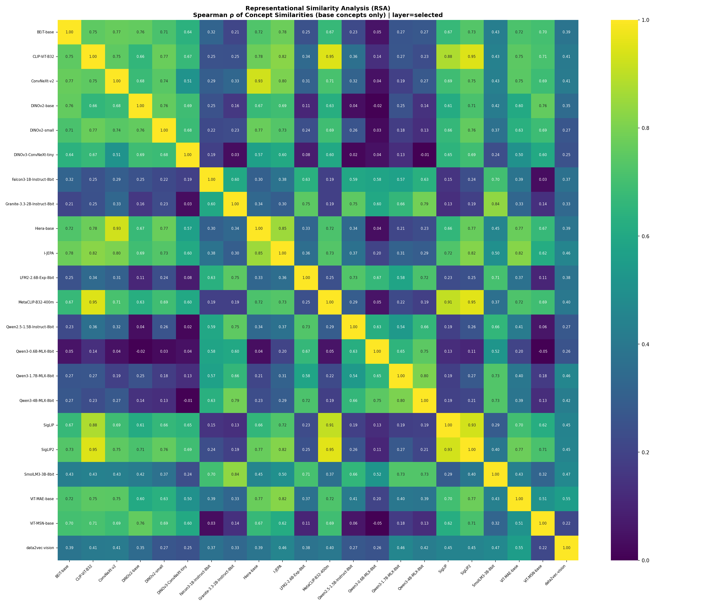
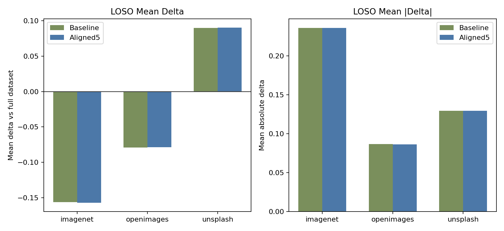
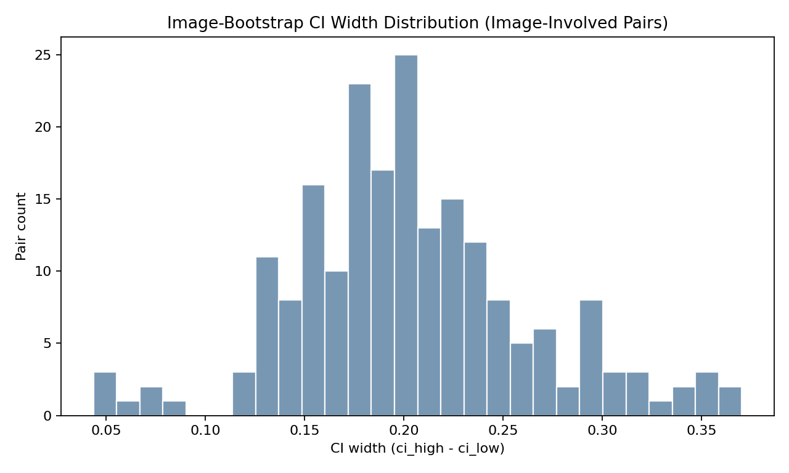
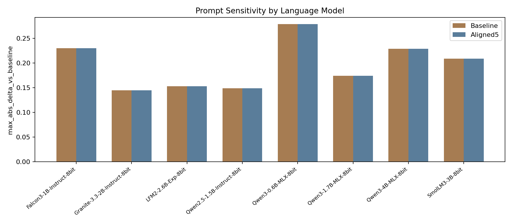
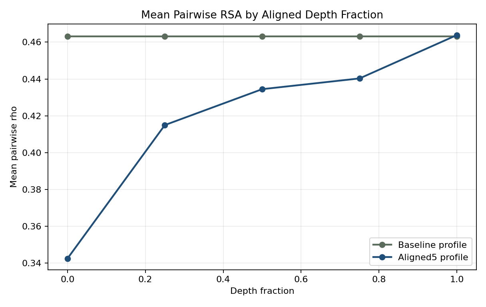
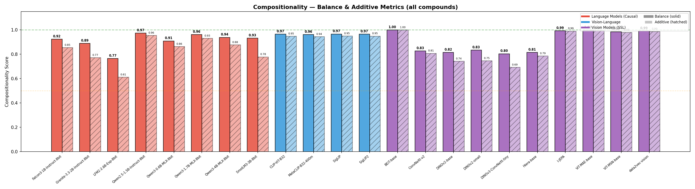

Where Representations Diverge: Robust Evidence on Modality, Dataset, and Depth in Cross-Modal Geometry
Abstract
The Platonic Representation Hypothesis proposes that sufficiently capable models trained on different modalities converge toward a shared representational geometry. We test that claim using a self-contained local evaluation of 22 models: 8 language models, 10 self-supervised vision models, and 4 vision-language models. The final evaluation uses 28 concepts (20 base + 8 compounds), 30 images per concept, image-level caching, image-bootstrap confidence intervals, Mantel permutation tests with Benjamini-Hochberg FDR correction, source holdout analysis, prompt-sensitivity controls, and an aligned-layer protocol. Across 231 model pairs, within-family agreement is strong for vision-language pairs (median Spearman RSA ρ = 0.702), vision-vision pairs (ρ = 0.682), and language-language pairs (ρ = 0.661), but much weaker for language-vision pairs (ρ = 0.259) and language-vision-language pairs (ρ = 0.230). Only 35/80 language-vision pairs and 5/32 language-vision-language pairs survive FDR correction, versus 43/45 vision-vision pairs and 40/40 vision-vision-language pairs. Robustness controls materially affect interpretation: leave-one-source-out removal of ImageNet shifts pairwise RSA by a mean of -0.1564 (max |Δ| = 0.7080), language prompt choice changes cross-modal RSA by a mean maximum absolute delta of 0.1960, and aligned-layer analysis shows monotonic growth in mean pairwise RSA from 0.3424 at early depth to 0.4639 at terminal depth. Yet terminal aligned and baseline results are nearly identical (mean delta +0.0006), indicating that the depth effect is about when convergence appears, not whether the final layer changes the conclusion. The strongest supported claim is therefore not universal convergence, but modality-asymmetric and dataset-conditional geometry.
Keywords: Platonic Representation Hypothesis, representational similarity analysis, cross-modal convergence, multimodal models, source holdout, prompt sensitivity, layer alignment
1. Introduction
The Platonic Representation Hypothesis asks whether models trained on different modalities converge toward the same concept geometry because they model the same world. This is a stronger claim than ordinary transfer or alignment: it implies that representational structure is at least partly inevitable.
That claim is easy to overstate. Apparent convergence can come from shared internet distributions, language-alignment objectives, prompt choices, or image-sourcing artifacts. A useful test must therefore ask not only whether cross-modal signal exists, but what survives after obvious confounds are stressed.
2. Methods
2.1 Model Families and Data
The final roster contains 22 models: 8 language models, 10 self-supervised vision models, and 4 vision-language image encoders. The evaluation uses 20 base concepts for RSA and 8 compound concepts for exploratory compositionality analysis. Each concept is represented by 30 images, with final source coverage distributed across ImageNet, OpenImages, and Unsplash.
| Family | Models |
|---|---|
| Language (8) | Falcon3-1B-Instruct-8bit, Granite-3.3-2B-Instruct-8bit, LFM2-2.6B-Exp-8bit, Qwen2.5-1.5B-Instruct-8bit, Qwen3-0.6B-MLX-8bit, Qwen3-1.7B-MLX-8bit, Qwen3-4B-MLX-8bit, SmolLM3-3B-8bit |
| Vision SSL (10) | BEiT-base, ConvNeXt-v2, DINOv2-base, DINOv2-small, DINOv3-ConvNeXt-tiny, Hiera-base, I-JEPA, ViT-MAE-base, ViT-MSN-base, data2vec-vision |
| Vision-Language (4) | CLIP-ViT-B32, MetaCLIP-B32-400m, SigLIP, SigLIP2 |
2.2 Evaluation Protocol
RSA is computed over the 20 base concepts by constructing per-model cosine-similarity matrices, flattening the upper triangle (190 concept pairs), and computing Spearman rank correlation between model-pair vectors. Statistical and robustness controls in the final package are:
- Mantel permutation tests (3,000 permutations per model pair) with BH-FDR correction
- Image bootstrap confidence intervals (300 draws; sample size 10; replacement)
- Leave-one-source-out and source-only image-source analysis
- Prompt sensitivity over three short language prompts
- Aligned-layer depth profiling at d00, d25, d50, d75, and d100
3. Results
3.1 Global Geometry Is Family-Structured
The strongest and most stable result is modality asymmetry. Within-family agreement is high for language-language, vision-vision, and vision-language pairings, while cross-modal agreement remains markedly weaker.
| Pair type | Pairs | Median ρ | Mean ρ | Significant after FDR |
|---|---|---|---|---|
| Language-Language | 28 | 0.661 | 0.670 | 28 / 28 |
| Vision-Vision | 45 | 0.682 | 0.630 | 43 / 45 |
| Vision-Vision-Language | 40 | 0.702 | 0.681 | 40 / 40 |
| Language-Vision | 80 | 0.259 | 0.246 | 35 / 80 |
| Language-Vision-Language | 32 | 0.230 | 0.232 | 5 / 32 |
| Vision-Language-Vision-Language | 6 | 0.939 | 0.927 | 6 / 6 |

3.2 Vision-Language Encoders Remain Structurally Vision-Like
Vision-language encoders are far closer to vision than to language. Median RSA is 0.702 for vision-to-vision-language pairs but only 0.230 for language-to-vision-language pairs. This pattern is better explained as engineered interface alignment on top of a fundamentally visual encoder than as spontaneous convergence toward a modality-neutral geometry.
3.3 Dataset Composition Changes the Geometry
Source holdout is one of the most consequential additions in the final package. Excluding ImageNet changes pairwise RSA by -0.1564 on average, with some model pairs moving by more than 0.70. The measured geometry is therefore conditional on how concepts are instantiated in images, not only on model weights.
| Holdout condition | Concepts retained | Mean Δρ | Mean |Δρ| | Max |Δρ| |
|---|---|---|---|---|
| Leave out ImageNet | 10 | -0.1564 | 0.2358 | 0.7080 |
| Leave out OpenImages | 14 | -0.0792 | 0.0865 | 0.2654 |
| Leave out Unsplash | 16 | +0.0900 | 0.1295 | 0.4170 |
| ImageNet only | 10 | -0.0194 | 0.1912 | 0.5931 |


3.4 Prompt Choice and Layer Depth Both Matter
Prompt sensitivity is not negligible: across the 8 language models, the mean maximum absolute cross-modal RSA shift under alternative templates is 0.1960. At the same time, aligned-layer analysis shows a monotonic increase in mean pairwise RSA from 0.3424 at d00 to 0.4639 at d100. Deeper layers converge more, but the terminal aligned and baseline runs remain nearly identical overall (mean delta +0.0006), so depth changes when convergence appears rather than the final qualitative conclusion.


3.5 Compositionality Is Exploratory in the Final Package
The early project narrative treated compositionality as a headline claim. The final 22-model package does not justify that emphasis. The current metrics produce broad overlap across modalities, and the result is sensitive to metric design. It remains useful as exploratory evidence, but it is not one of the main pillars of the paper.

4. Discussion
The final replication supports a weak but useful claim: models converge strongly within family, and vision-language encoders converge strongly with vision encoders. It does not support a strong version of universal cross-modal convergence at the tested scale.
The reason the final interpretation is more conservative than the early one is not merely added model count. It is methodological pressure. Source holdout, prompt sensitivity, and aligned-layer analysis all show that measured geometry depends on choices that can no longer be treated as peripheral.
The strongest remaining open question is whether the current results reflect a low-scale regime below true cross-modal convergence, or whether modality-specific structure remains the dominant organizing force even as models grow. The present study narrows that question by establishing where convergence is already robust and where it remains fragile.
5. Conclusion
The strongest supported statement in the final evidence is not that all capable models discover one shared geometry. It is that representational geometry is simultaneously shaped by world structure and by modality-specific training pressure. Within-family convergence is strong. Cross-modal convergence is partial. Vision-language encoders remain structurally vision-like. And the final interpretation depends materially on source, prompt, and depth controls.
Code and Data Availability
Code, curated data manifests, final result artifacts, and the print-ready manuscript are available at https://github.com/abinashkarki/cross-modal-representations.
The canonical public artifacts for this release are the manuscript in
manuscript/, the curated dataset in data/, and the signed-off
baseline and aligned outputs in results/baseline/ and
results/aligned5/.
References
- Andreas, J. (2019). Measuring Compositionality in Representation Learning. ICLR 2019.
- Bao, H., Dong, L., Piao, S., and Wei, F. (2022). BEiT: BERT Pre-Training of Image Transformers. ICLR 2022.
- He, K., Chen, X., Xie, S., Li, Y., Dollar, P., and Girshick, R. (2022). Masked Autoencoders Are Scalable Vision Learners. CVPR 2022.
- Huh, M., Cheung, B., Wang, T., and Isola, P. (2024). The Platonic Representation Hypothesis. arXiv:2405.07987.
- Kriegeskorte, N., Mur, M., and Bandettini, P. A. (2008). Representational similarity analysis: connecting the branches of systems neuroscience. Frontiers in Systems Neuroscience, 2, 4.
- Mikolov, T., Sutskever, I., Chen, K., Corrado, G. S., and Dean, J. (2013). Distributed representations of words and phrases and their compositionality. NeurIPS 2013.
- Oquab, M., Darcet, T., Moutakanni, T., Vo, H., Szafraniec, M., Khalidov, V., and Bojanowski, P. (2023). DINOv2: Learning Robust Visual Features without Supervision. arXiv:2304.07193.
- Radford, A., Kim, J. W., Hallacy, C., Ramesh, A., Goh, G., Agarwal, S., Sastry, G., Askell, A., Mishkin, P., Clark, J., Krueger, G., and Sutskever, I. (2021). Learning Transferable Visual Models From Natural Language Supervision. ICML 2021.
- Zhai, X., Mustafa, B., Kolesnikov, A., and Beyer, L. (2023). Sigmoid Loss for Language Image Pre-Training. ICCV 2023.